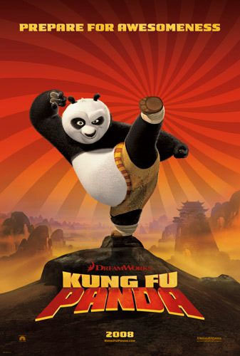

Pelicula |
Genero |
Sinposis |
Funciones |
|---|---|---|---|

|
Ciencia Ficcion | Cuando el reportero Eddie Brock intenta exponer las prácticas ilegales de una corporación científica, se convierte en huésped de un simbionte alienígena llamado Venom. Ahora, Eddie debe aprender a convivir con esta peligrosa criatura que le otorga habilidades extraordinarias, pero que también tiene sus propios oscuros deseos. Mientras lucha por controlar su nuevo poder, Eddie descubre que el destino de la humanidad podría depender de su inesperada alianza con Venom. |
Lunes a Sabados 10:00 AM - 11:45 AM 12:00 PM - 1:45 PM 2:45 PM - 4:00 PM 5:00 PM - 6:45 PM 7:30 PM - 9:45 PM |

|
Ciencia Ficcion | UEn un futuro donde la Tierra está al borde del colapso debido a desastres naturales, un grupo de astronautas liderado por el piloto Cooper se embarca en una misión épica para salvar a la humanidad. A través de un agujero de gusano recién descubierto, exploran galaxias lejanas en busca de un nuevo hogar para la raza humana. Mientras enfrentan desafíos científicos y emocionales, Cooper lucha con el dilema de salvar a su familia o cumplir con su deber hacia la humanidad. Una odisea sobre el amor, la supervivencia y el tiempo. |
Lunes a Sabados 12:00 PM 2:30 PM 5:00 PM 7:30 PM 10:00 PM 12:30 AM |
| 
|
Animación | Po, un soñador panda amante de los fideos, ve cómo su vida cambia cuando es elegido por accidente como el legendario Guerrero Dragón, encargado de proteger el Valle de la Paz. Aunque inicialmente nadie cree en sus habilidades, Po encuentra el camino hacia la grandeza aprendiendo de sus ídolos, los Cinco Furiosos, y su maestro Shifu. Con humor y corazón, Po debe enfrentar al feroz Tai Lung y descubrir que su mayor fuerza radica en creer en sí mismo. |
Lunes a Sabados 12:00 PM 2:30 PM 5:00 PM 7:30 PM 10:00 PM 12:30 AM |